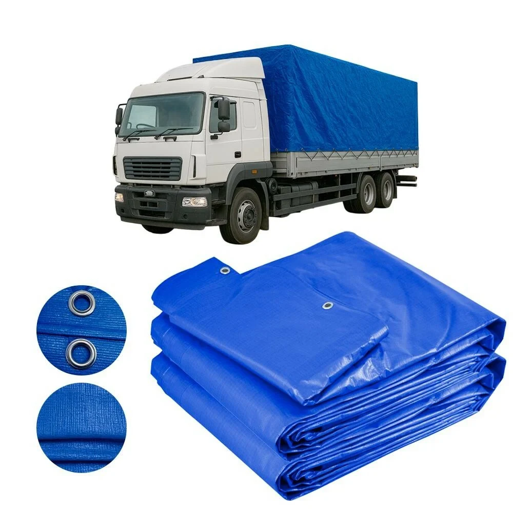
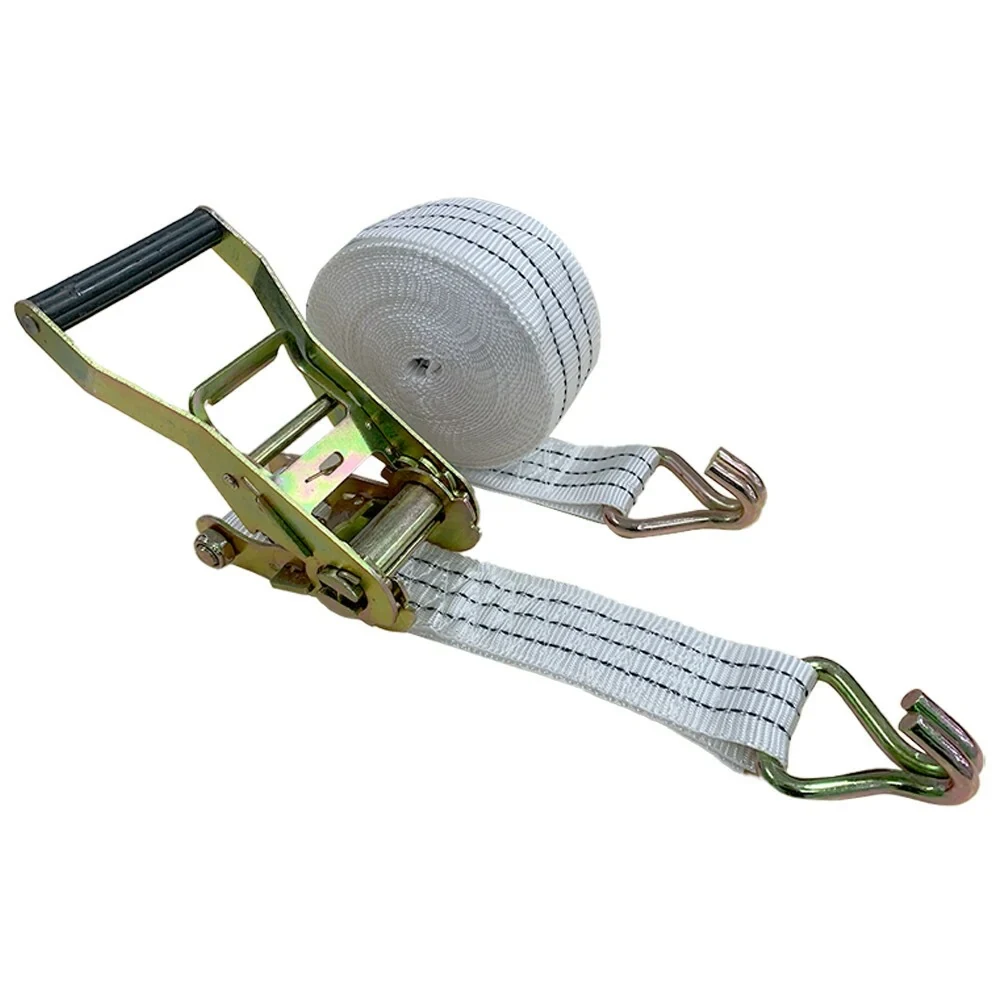

CK300 — polietileno
Lona ligera de PE para protección de cargas. Consultar medidas, color y acabado.
Lonas para camiones, mallas de contención, cuerdas y cintas de amarre — línea B2B para transporte y distribución.

Lona ligera de PE para protección de cargas. Consultar medidas, color y acabado.

Lona PVC para camiones ligeros y remolques, especificaciones bajo consulta.

Opciones de PVC para cubrir cargas; características de CK500 sujetas a confirmación.

Lonas enceradas de algodón, incluso hilo 08, para protección de cargas.

Malla negra para chatarra, reciclables y granos; confirmar abertura y tamaño.

Malla industrial gris para contención de cargas; gramaje y aplicación sujetos a confirmación.

Cuerdas de poliéster y otros materiales, diversos diámetros y presentaciones.

Cintas de amarre con carracas y ganchos, más accesorios de fijación.
Fotografías originales de los productos. No se identifican públicamente los proveedores ni se presume disponibilidad.
Indique material, medidas, espesor o gramaje, color, acabados, accesorios, cantidad y destino. Especificaciones por confirmar.
Las cintas de amarre no son automáticamente aptas para elevación. Verifique los límites de cada modelo.